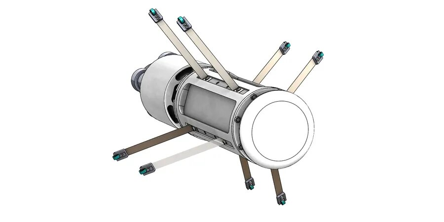
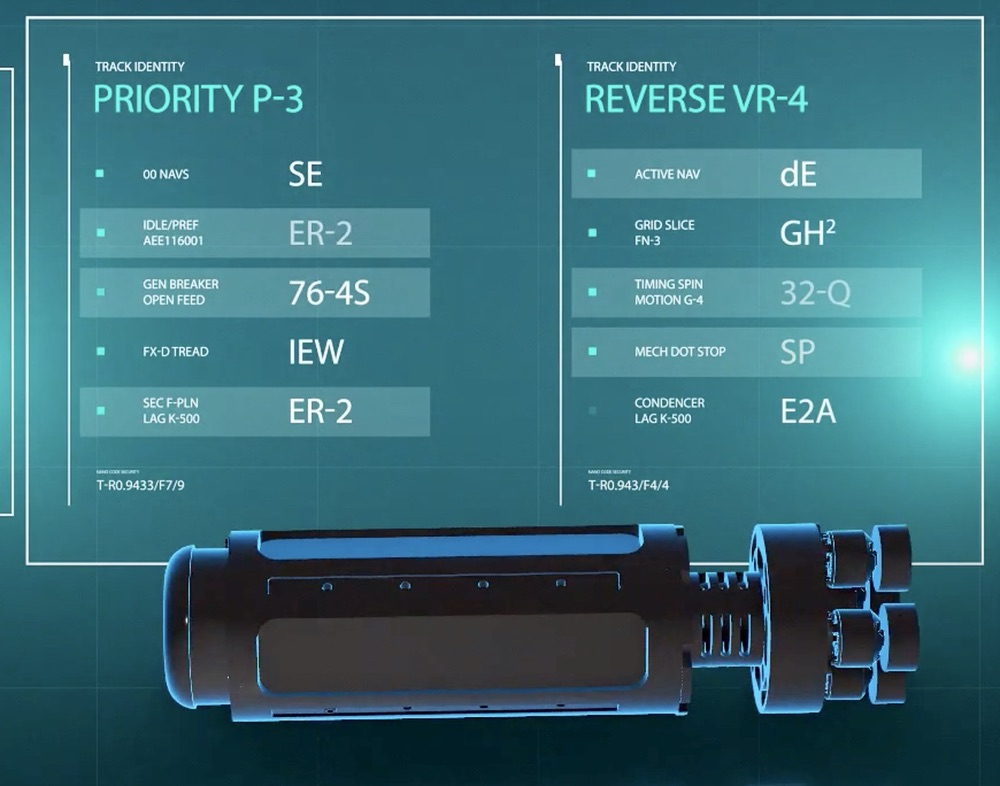
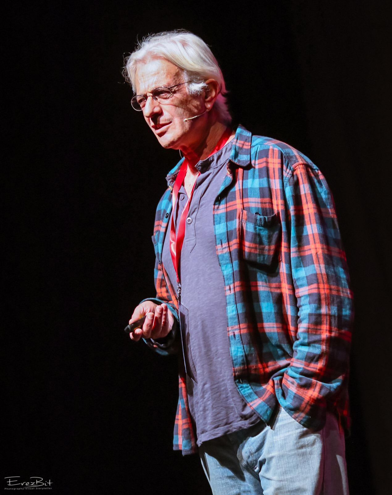

מערכת הולכת המים, שבדרך כלל טמונה מתחת לפני הקרקע,
היא התשתית ההנדסית הגדולה ביותר בעולם (מאות מיליוני קילומטרים)
שאיננה נתונה לניטור תקופתי וכתוצאה מכך החברות המפעילות אותה אינן מודעות לכמות הנזילות, מיקומם, מצב הצנרת, חסימות, חיבורים פיראטיים, הימצאות גופים זרים בצנרת וכשלים נוספים.

הפתרון
אנו בחברת אייפייפ פיתחנו מערכת מהפכנית שבמרכזה פלטפורמה (צוללת זעירה) אוטונומית, נושאת חיישנים המאפשרת בדיקה ישירה של צנרת המים מבפנים בזמן שהצנרת פעילה ומבלי להפריע את אספקת המים לצרכנים.
הפתרון שלנו מאפשר ניטור של צנרת מים מקוטר של "4 ועד לקוטר של "80 ויותר ובטווחים של עד 10 ק''מ.
המערכת מספקת מידע מהימן אודות מצב הצנרת, שלמות המערכת ומיקום הבעיות שהתגלו. כמו כן המערכת מסוגלת לשרטט את תוואי הצינור על גבי מפה תלת מימדית (GIS).
בוידאו: MODA_01 שטה בתוך צנרת במעבדת הבדיקות שלנו
הטכנולוגיה
MODA_01 היא פלטפורמה נושאת חיישנים המסוגלת לנוע באופן אוטנומי למרחקים ארוכים (עד 10 ק''מ) ולבצע את המשימות הבאות:
1. איסוף אינפורמציה ויזואלית מתוך הצנרת (וידאו) המצביעה על כשלים שונים 2. איסוף מידע שמע מתוך הצנרת המאפשר זיהוי של דלף. 3. איסוף מידע המאפשר שיחזור תוואי הצינור ומיקום הכשלים שנמצאו בו על גבי מפה דיגיטלית תלת מימדית
(GIS).
היכולות הללו מאפשרות לאתר כשלים שונים בצנרת, לבחון האם מדובר בדלף ולהעריך את חומרתו, לשרטט את תוואי הצינור על מפה דיגיטלית ולקבוע את מיקומם המדוייק של הכשלים.

המומחים שלנו

ד''ר מנשה רג'ואן (מנכ''ל ומייסד החברה)- יזם עם ניסיון של למעלה משלושים שנים בפיתוח מערכות רב תחומיות ובתפקידי ניהול בכירים במיגוון חברות תעשייתיות. תואר ראשון במתמטיקה-פיסיקה ובהנדסת תוכנה, תואר שני בכימיה פיסיקלית
ובאנרגיה ותואר שלישי בכימיה חישובית.
עו''ד ברוך אלפיה (ליווי משפטי ופיננסי)- יזם בתחום הפינטק, מומחה לניהול סיכונים והתאמות בתחום הפיננסי, שימש כסמנכ''לבכיר בכ.א.ל, שימש כיועץ לחברת ויזה העולמית. בוגר ביה''ס למנהל עסקים ע''ש רקנאטי לניהול עסקי בכיר.
ד''ר שמעון מזרחי (פיתוח מערכות)- מומחה בתחום האלקטרוניקה ומערכות משובצות מחשב, הדמיות בתלת מימד ופיתוח טכנולוגי, משמש מרצה ומנחה פרוייקטים במכללת לב להנדסה ועל שמו רשומים פטנטים רבים וניסיון של עשרים שנים בפיתוח.
בעל תואר שלישי במחשבים.
פרופ' דניאל וייס (פיתוח פלטפורמה) - פרופ' אמריטוס בטכניון, מומחה מוביל בתחום הרובוטיקה ושימש בעבר כראש תחום רובוטיקה בטכניון, חבר האקדמיה הלאומית למדעים.
על החברה
אנו (iPIPE Ltd) חברת סטארט-אפ המנהלת מערכת מהפכנית המספקת בדיקה ישירה ויכולת ניהול מערכות של רשתות צנרת מי שתייה בלחץ בזמן שהצנרת פעילה.
אנו מספקים פתרונות אפקטיביים לזיהוי ואיתור נזילות, ריתוכים לקויים, קורוזיה, חסימות, חיבורים לא מורשים וקטעי רשת ללא מיפוי.
במימון משרד האנרגיה השגנו קשר אסטרטגי עם חברות מים מרכזיות בישראל -
"הגיחון", מניב ראשוןומאי הרצליה.
2018 - החברה קיבלה מענק פיתוח ממשרד האנרגיה והמים
2019 – הסכם לביצוע פיילוט עם חברת "הגיחון'' (תאגיד המים של ירושלים)
2019 – הסכם לביצוע פיילוט עם ''מניב ראשון'' (תאגיד המים של ראשון לציון)
2019 – אייפייפ הציגה את הטכנולוגיה שלה בתערוכת המים WATEC שהתקיימה בתל אביב
2019 – אייפייפ הציגה את הטכנולוגיה שלה בפני נשיא בולגריה בזמן ביקורו בישראל